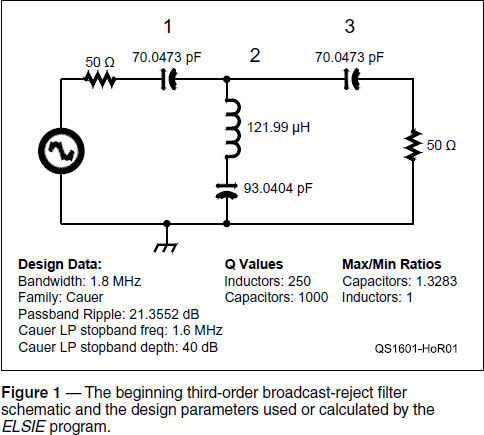
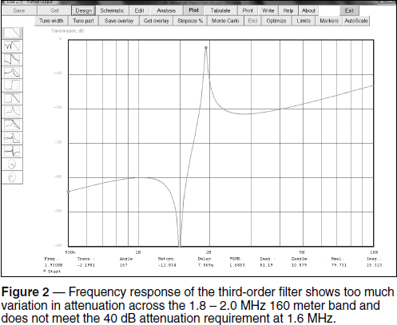
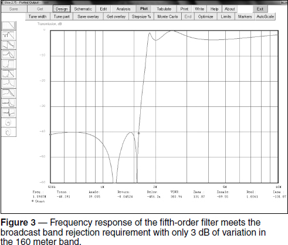
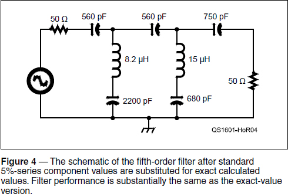

Experiment #156 — Designing a Broadcast Reject Filter
If you live within a few miles of an AM broadcast station, you will be interested in broadcast-reject filters to prevent overload, this month’s subject. This will actually be a “two-fer” column because we’re going to use the latest version of Jim Tonne’s, W4ENE, ELSIE filter design software to do the design work. This handy software makes it easy to design your own passive LC filters in a wide variety of configurations. You can juggle design inputs to your heart’s content, watching the filter respond until it’s just right.
Downloading ELSIE
Begin by downloading the set of utility programs from The ARRL Handbook’s web page.1 Open the ZIP file, double-click on LCinstall275.exe and after installing, run ELSIE. Be sure you are running version 2.75 (look at the lower left of the opening display) so that the directions in this article will agree with what you see on your screen. Begin by clicking NEW DESIGN.
Specifying the Filter
Now it’s time to tell ELSIE what kind of circuit you want. This is the filter’s topology describing the general arrangement of the filter components. (Filter basics were covered in “Hands-On Radio” experiments #50 and #51.2) Because we are designing a broadcast-reject filter for 160 meter reception, we will want a high-pass response. ELSIE gives us two choices for high-pass filters: capacitive input and inductive input. A capacitor in series with the filter at the input (capacitive input) blocks any dc and low-frequency signals, so select that topology.
Next, we must select from the many types of LC filter circuits, called families, and each has a slightly different set of characteristics. For example, the Butterworth family has a smooth rolloff between the passband and the stop band. The Chebyshev family allows some ripple in either passband or stop band in trade for a steeper rolloff. Bessel filters have a constant time delay through the filter in the passband. If you click the ? button next to BUTTERWORTH in the FAMILY section, a pop-up window will show the general behavior for each family.
In our case, we need a very sharp rolloff, passing signals with little attenuation at 1.8 MHz, the bottom end of 160 meters, but lots of attenuation at 1.6 MHz, the highest frequency of the AM broadcast band at which full-power stations are permitted.3 Chebyshev would be a good choice, but the Cauer family is even better at creating the necessary steep rolloff. The tradeoff apparent from the filter characteristics is that attenuation of the Cauer filters varies quite a bit in the stop band. That’s okay, as long as a certain minimum attenuation is maintained, so select Cauer as the filter family.
Now the program needs some performance specifications entered at the right-hand side of the screen. How much attenuation (STOP BAND DEPTH, AS, in dB) is enough for our filter? In my experience, 40 dB is enough to keep even nearby AM stations from clobbering the front end of a late-model receiver. For RIPPLE BANDWIDTH (FC), enter “1.8M” (1.8 MHz) as the lowest frequency of the filter passband. The highest frequency at which we want our 40 dB of attenuation, “1.6M” (1.6 MHz), is the STOPBAND WIDTH (FS).
Filter ORDER (N) can be thought of as the number of resonances created by the filter components. The higher the order, the more components (Ls and Cs) are required to create the circuit. Start by entering a filter order of 3 to see if we can meet our design goals.
Viewing the Response
To set up the program’s calculations and display configuration, click the ANALYSIS tab. This is where the inductor and capacitor Q are specified (250 and 1000, respectively). Lower values of Q results in less stop band attenuation and less sharp rolloff, among other effects. Leave them at their default settings for this exercise. Specify an ANALYSIS START FREQUENCY of 0.5 MHz and an ANALYSIS STOP FREQUENCY of 10 MHz. Leave all other selections and values at their original default settings.
Before looking at the filter response plot, click the SCHEMATIC tab at the top of the screen. The information is summarized in Figure 1. Passband ripple (21.3 dB) and the component maximum/minimum ratios are calculated by the program.

Now click the PLOT tab for the frequency response graph of Figure 2. Place the cursor on the blue response line and hold down the left mouse button. At the bottom of the screen, you will see the filter performance at that frequency. The figure shows performance at the response peak of 1.93 MHz. Move the mouse to the stop band notch near 1.5 MHz to find attenuation there (–69 dB at 1.49 MHz). Attenuation varies by more than 20 dB over the 160 meter band — that’s too much! The program is trying but can’t meet our specifications without more components to create a higher-order filter. (While you’re at it, use the DESIGN window to select different filter families and compare their responses.)

Interactive Design
This is where the value of easy-to-use design software becomes apparent. Instead of re-starting a laborious design process, simply re-enter the new specifications and try again. Return to the DESIGN tab and increase the filter order from 3 to 4, then click PLOT. Performance is improved, but attenuation still varies by more than 10 dB across 160 meters and the rolloff isn’t sharp enough; only 28 dB of attenuation at 1.6 MHz.
Increase the filter order to 5, resetting FS to 1.6 MHz. (The program changes some values when order is changed between odd and even. Check the settings when order is changed.) This response (see Figure 3) is much more useful. Attenuation varies by about 3 dB (1⁄2 S-unit) across the 160 meter band and we just meet our design goal with –40 dB of attenuation at 1.59 MHz. Click the Save tab to hold on to this design version before proceeding.

Using Standard Value Components
The schematic shows all of the component values are in a reasonable range. Never-theless, I don’t think your local component vendor will have, say, 538.436 pF capacitors in stock, nor do you want to have to adjust variable capacitors. Now is the time to redesign the filter using standard fixed-value parts. This will degrade filter performance a bit, but remember that we can continue to work with the design.
Return to the DESIGN window and click the NEAREST 5% tab. You’ll be presented with several options, starting with changing all of the components to the nearest standard value in the 5% series. Other options include just changing the capacitors or inductors, assuming you’ll wind the Ls or tune the Cs. You can also change just the capacitors or inductors and the program will re-calculate the remaining values exactly so that you can tune up the filter yourself.
Let’s take the easy way out and select the first option to use all standard values. Return to the DESIGN tab, then check the schematic shown in Figure 4. How about performance? Viewing the frequency response, not much has changed. We have a little more variation across the band (now 4 dB) but attenuation at 1.6 MHz is still the same, only failing to reach 40 dB below 840 kHz by less than a dB.

I think we’re done! It’s easy to see how you could continue to experiment with the filter, possibly trading some stop band attenuation for less passband attenuation, or smoother response in the passband, and we haven’t even begun to work on the input and output impedances or delay time. Nevertheless, this design can be built with off-the-shelf components requiring no tuning to provide useful performance. Thanks to W4ENE and his terrific software.
Notes
1A set of free student version circuit design utilities from Tonnesoft are available for download from www.arrl.org/arrl-handbook-reference.
2All previous “Hands-On Radio” columns are available to ARRL members at www.arrl.org/hands-on-radio.
3Above 1600 kHz in the US, AM stations are limited to 10 kW during the day and 1 kW at night. These smaller stations are less likely to cause overload problems than the full-power 50 kW transmitters.